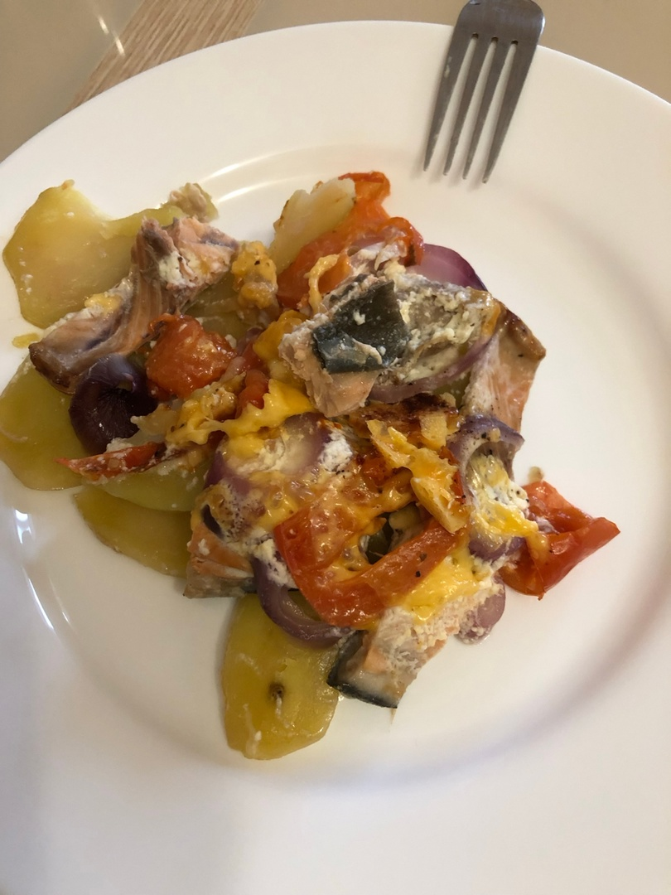

ГОРБУША С КАРТОШКОЙ ПОД ШУБОЙ В ДУХОВКЕ
КБЖУ на 1 порцию - 370/40/8/39
Время приготовления - 45 минут
Сложность - средне
ИНГРИДИЕНТЫ НА 1 ПОРЦИЮ:
- Филе горбушм - 150гр
- Катофель - 2шт
- Помидор - 1шт
- Лук - 30гр
- Сметана - 30гр
- Сыр - 20гр
- Чеснок, специи по вкусу
СПОСОБ ПРИГОТОВЛЕНИЯ:
Шаг 1:
Очищаем филе рыбы от кожи и костей. Картофель и помидор нарезаем кружочками, лук - полукольцами.
Шаг 2:
Форму для запекания слегка смазываем маслом, выкладываем картофель, солим, сверху кладём рыбу, добавляем специи, далее кладём лук, поливаем сметаной. Затем сверху выкладываем помидор, чуть-чуть посолить.
Шаг 3:
На крупной тёрке натереть сыр и выложить его поверх блюда.
Шаг 4:
В разогретую до 180 градусов духовку отправляем рыбу с картошкой на 30-40 минут (смотрите по возможностям вашей духовки)
Шаг 5:
Перед подачей можно украсить зеленью. ПРИЯТНОГО АППЕТИТА!